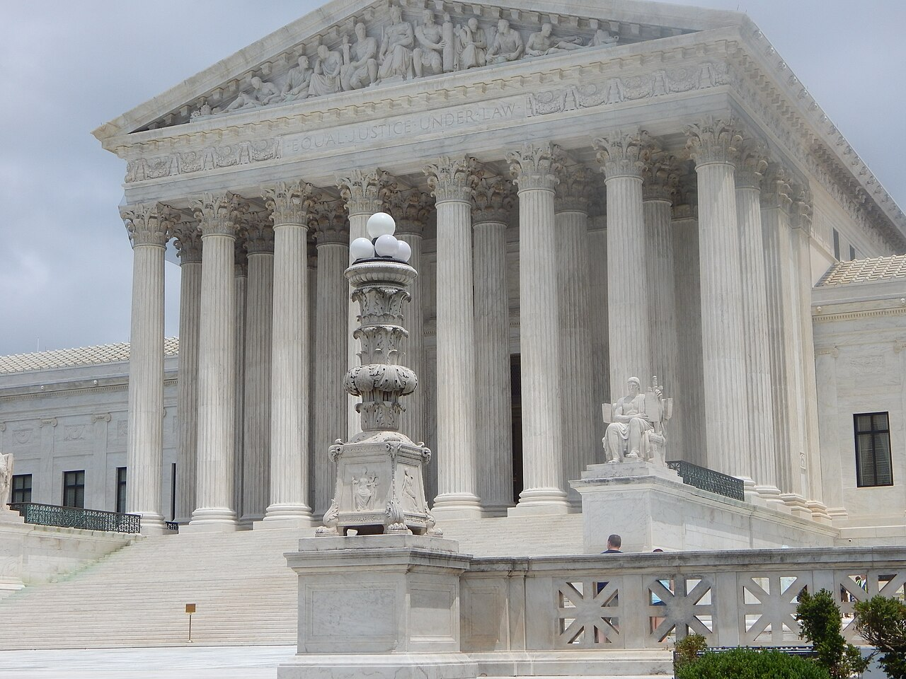

Vol. I · No. 96 · Tuesday, August 25, 2026 · 17 items · ~16 min read
The president told his Justice Department to settle with Ticketmaster, the Treasury gave the Iran campaign a name, and OpenAI published the numbers on the chip it built so it could stop buying Nvidia's.
Law · Washington
The president met the CEO, then told a senior Justice official to settle it
The Justice Department, whose Antitrust Division had taken Live Nation to trial a week before the Oval Office meeting. — Wikimedia Commons
The Wall Street Journal reported Monday that President Trump met Live Nation chief executive in the Oval Office on February 27, ostensibly to discuss the Kennedy Center, and asked why the government's antitrust case against the company had not settled. The trial had begun roughly a week earlier. Trump then told a senior Justice Department official to settle it. A second meeting followed on March 5, attended by Rapino, Live Nation's outside counsel, White House counsel David Warrington and then-Attorney General Pam Bondi, at which the president again pressed the point. Two political appointees, per the Journal, pushed Antitrust Division lawyers to strip from a draft settlement the language that would have forced a Ticketmaster divestiture.
The lawyer Live Nation retained to run those talks was of , who had little antitrust experience and was at the time representing Trump personally in his New York criminal cases. In July the president made him United States Attorney for the Southern District of New York, the district where the case sits. Live Nation executive vice president Dan Wall defended the decision to go over the Antitrust Division's head, saying the division had refused to meet for six months. Antitrust chief Gail Slater, who inherited the case from the Biden administration and took it to trial, was reportedly sidelined during the negotiations.
"When you've been unable to get a meeting for six months, you have every right to try something else."
— Dan Wall, Live Nation EVP for corporate and regulatory affairs, to the Wall Street Journal, August 24
The settlement did not end the matter. In April a jury found, after roughly five weeks of trial, that Live Nation and Ticketmaster had illegally maintained monopoly power in the parallel case brought by state attorneys general, several of whom rejected the federal deal and kept litigating. In a July letter to Judge Arun Subramanian they said they had significant concerns that the settlement is not in the public interest, which is the precise statutory question he must now answer under the before he can enter the decree. He must also fix the remedy in the case the states already won.
Why it mattersThe Tunney Act exists because Congress once suspected a president of arranging an antitrust settlement, and it has been a formality for fifty years. Judge Subramanian now has a public record of exactly the interference the statute was written to catch, and a jury verdict of monopolization sitting beside it. If a district judge will ever refuse to enter a consent decree on public-interest grounds, this is the fact pattern.
Treasury names the Iran campaign, and designates sixty entities across five lifelines
Treasury Secretary delivered Monday the press conference this brief reported yesterday as scheduled rather than held. The campaign has a name, , and a shape: nearly sixty individuals, entities and vessels designated across what Bessent called Iran's five most vital lifelines, which are digital assets, technology, gold, aviation and shipping. The designees carry business ties in China, the United Arab Emirates, Singapore, Turkey and Greece. Bessent said it is no longer acceptable to operate in the gray spaces and warned other governments to cut economic ties with Tehran or face , without naming which.
Iran's rial hit a record low of roughly 2.02 million to the dollar hours before the announcement. Bessent confirmed no relief until Iran surrenders its enriched uranium and forgoes a weapon, and answered Iranian claims of a two-year plan to absorb the pressure by saying the leadership is admitting what the world can now see. The architecture is worth noting for what it is not: this is a secondary-sanctions regime aimed at everyone else's compliance departments, not a new round of primary designations, and the countries it is actually aimed at were left unnamed.
Why it mattersNaming an operation is a commitment device. It converts a series of discrete designations into a program that has to show progress, and it hands every sanctions practice in the country a client alert to write by Friday. The unnamed third countries are the tell: the leverage lives in the ambiguity, and so does the compliance cost.
Framing noteNobody disputes what was announced; the split is entirely valence. Al Jazeera headlines it as the administration announcing a "global economic war on Iran," stressing the unilateral reach into third countries, while the Washington Examiner takes Bessent's own frame, "economic asphyxiation of this regime," and asks whether the government falls.
OpenAI published its chip numbers, and they are aimed squarely at Nvidia
OpenAI presented the first detailed benchmarks for Jalapeno, the chip it developed with Broadcom, at the conference on Tuesday. Measured on SemiAnalysis's public InferenceX suite, the chip returned between 1.5 and 1.9 times the throughput per kilowatt of Nvidia's GB200 and GB300 rack systems, and between 1.7 and 3.6 times lower end-to-end latency. Jalapeno runs at a 700-watt ; the Nvidia systems it was measured against are rated at 1,200 to 1,400 watts.
Richard Ho, who runs hardware at OpenAI, said on a press call that the results show a very significant advance over the state of the art, and that the chip serves more work per unit of power while returning answers faster. The design goal was to attack delays in the prefill and inter-chip communication phases of inference. Deployment is modest and honest about it: very small volumes by the end of 2026, meaningful volume in 2027, with a second generation deep in development and a third taking shape. The caveat TechCrunch flags is the right one, which is that Jalapeno is being measured against the Nvidia hardware available now, not the hardware that will exist when it actually ships.
Why it mattersEvery AI capital structure this brief has covered in the past fortnight, the convertibles, the retail bonds, the residual-value guarantees, discounts an assumption that compute has to be bought from one supplier at one supplier's margin. A credible in-house alternative does not need to ship in volume to change that assumption. It only needs to be published, which it now has been.
The day's biggest AI story ran on the Front. What is left is the part that happens to lawyers.
AI · Nashville
Legal AI stops waiting to be prompted, and the profession names the risk in the same afternoon
Nashville, where ILTACON 2026 convened this week around a single question: how much work firms should hand to software that no longer waits to be asked. — Wikimedia Commons
At in Nashville on Monday, Law360 reported that legal artificial intelligence platforms are moving beyond chat-based assistants toward systems that operate autonomously with limited user supervision. Four hours later the same reporter filed a second piece from a second panel, warning attorneys about , the practice of prompting a model on mood and outcome rather than instruction and then iterating. The panel's conclusion was that AI can enhance legal work but human judgment remains essential, which is the sort of sentence that sounds like a platitude until you notice it was said on the same day as the first sentence.
The substantive material was quieter and better. The theme of the first day, per Artificial Lawyer's briefing, was that before firms add more technology there is groundwork to do. Harriet Joubert-Vaklyes of Michael Best & Friedrich argued that the questions have to come long before the tool decision. A live audience poll found peer champions rated the most effective driver of adoption, ahead of both mandates and training. Heath Harris of NetDocuments made the point that well-structured firm data reduces how much context a model has to consume, and that on design more is not better. Ivy Grey of iManage noted that firm librarians already hold the expertise on how information should be structured, and are not being asked. Two separate sessions argued against picking one AI platform firm-wide, on the ground that fit varies by practice group.
Why it mattersThe interesting thing is not that agents are coming. It is that the discipline the panels prescribe, structured data, a real taxonomy, librarians consulted, peer champions, is entirely unglamorous knowledge-management work of the kind firms have deferred for twenty years. The firms that win this will be the ones that did the boring part first.
Anthropic will reportedly tell investors its market is worth thirty trillion dollars
The Wall Street Journal reported Tuesday that Anthropic is expected to tell IPO investors its exceeds thirty trillion dollars, ahead of the twenty-eight and a half trillion SpaceX presented before its own offering. The figure is derived from the total scope of work that could theoretically be done by AI models rather than from anything the company currently sells. Against it sit the actual numbers: revenue more than doubled to $11.6 billion in the second quarter, the raise could reach $100 billion, and the valuation target is roughly two trillion. documents are expected shortly, with a debut possible in September or early October.
The comparison the reporting invites is unkind. Ahead of SpaceX's offering, NYU's said of the smaller claim that it was reaching the end of what is plausible and pushing beyond. Anthropic's number is larger. Note also what this brief reported yesterday, that Ramp's spend data shows enterprise demand for the company's mid-tier model plateauing around eleven percent of total outlay. A thirty-trillion-dollar market and a plateauing model line are not contradictory, but they will be read in the same week.
Why it mattersEvery offering has a slide that is doing rhetorical rather than analytical work, and this one is unusually legible. Thirty trillion is roughly a quarter of world output, so what is being sold is not a forecast but a claim about the scope of the category. Read the risk factors instead; that is where the underwriters put what they actually believe.
An auction that stopped through, the week's largest announced deal, and a listing with no underwriter at all.
Corporate · Washington
The two-year stopped through, and foreign buyers carried a soft domestic bid
Treasury sold sixty-nine billion dollars of two-year notes on Tuesday, the first of three coupon auctions this week. — Wikimedia Commons
Treasury sold $69 billion of two-year notes on Tuesday at a high yield of 4.204 percent, against a when-issued level of 4.208. That is a of negative four tenths of a basis point, a stop-through, against a six-month average tail of positive two tenths. came in at 2.60 times against a 2.61 average, which is nothing. The interesting number is the takedown. Direct bidders took 23.1 percent against an average of 30.1, a genuinely weak domestic bid, and covered it at 66.0 against 56.9. Dealers were left with 10.9 percent, below their 13.0 average.
So a clean headline sitting on a divided book: foreigners bought what Americans did not. The five-year prices Wednesday and the seven-year Thursday, both outside this brief's window. Around the auction the long end firmed, with the ten-year closing Monday near 4.704 percent and Tuesday near 4.66, and the thirty-year falling more than four basis points Monday to 5.234. The equity tape was quiet in both directions, a tech-led pullback Monday on Iran headlines and a modest recovery Tuesday on softer oil. The genuinely striking thing about the front end is what September is priced for: as of the last clean read, prediction markets put a cut at roughly one percent and a hike at somewhere between twenty-eight and thirty-five. The debate is hold against hike, and it has been for weeks.
Why it mattersA stop-through with a 23 percent direct bid is not a strong auction, it is a rescued one. Every convertible, follow-on and retail bond this brief has covered in the past fortnight discounts off this curve, and the marginal buyer setting it this week sat outside the country.
McKesson buys Precision Medicine Group for $2.25 billion, the largest deal announced in the window
McKesson signed a definitive agreement Tuesday to acquire Precision Medicine Group for approximately $2.25 billion, folding it into the Oncology and Multispecialty segment. Precision runs intelligence, laboratory services, , market access consulting and commercialisation support. The transaction is subject to customary closing conditions including regulatory clearance. Advisers, financing mix and any termination fee are not disclosed in the free record, and this brief has not seen the merger agreement.
The logic is the same one has been running for years, which is that moving boxes is a thin-margin business and standing between the community oncologist and a biomarker-guided regimen is not. The company is buying the diagnostic and trial infrastructure it did not own, at the point where cancer care stops being organised by tumour site and starts being organised by molecular marker.
Why it mattersBy the magnitude check this is the largest transaction announced anywhere inside the window, and it is a healthcare services roll-up rather than anything in AI. That is worth noticing on a day when three of the four biggest stories in this paper are about compute.
No underwriters, no fixed price: a Tokyo payroll company let the opening auction set it
Advasa Holdings began trading on the Nasdaq Global Market on Tuesday under the ticker ADBT, as a . There was no book-build and no negotiated offer price: 94,046,357 shares were registered, and the opening price was set by against live order flow, clearing at ten dollars. The went effective on August 11 and the debut was pushed from August 18 to coordinate clearing with the depository, transfer agent and brokerages.
Note who is on the cover. WestPark Capital acted as financial adviser and Anthony, Linder & Cacomanolis as securities counsel, and there is no underwriting bank, because in this structure nobody is buying the shares and reselling them. The operating business is a Tokyo subsidiary running FUKUPE, an earned-wage-access platform integrated with Japanese payroll systems, with stated expansion plans into Indonesia and the United Arab Emirates. Japanese retail investors are expected to reach it through Monex, Rakuten, SBI and Webull.
Why it mattersRead it as a teaching case rather than a deal. Strip out the underwriter and you strip out the price support, the lock-up architecture, the research coverage and the Section 11 defendant, and you can see exactly what each of those was doing by watching what happens without them.
Greenberg Traurig puts its name on a $535 million all-stock REIT deal
Greenberg Traurig announced Monday evening that it represented Global Net Lease in its acquisition of Modiv Industrial, a roughly $535 million portfolio that closed on August 12 at a 7.6 percent cash and 8.7 percent on a GAAP basis. The consideration was all stock: each Modiv common share was exchanged for 1.975 newly issued Global Net Lease shares, while preferred holders took $25.00 in cash plus accrued dividends. The deal was structured to be immediately about four percent accretive to per share on a leverage-neutral basis.
The portfolio carries a fifteen-year weighted average remaining lease term, contractual escalations averaging 2.4 percent a year, and roughly 45 percent of base rent from investment-grade tenants, which lifts industrial to about half of Global Net Lease's straight-line rent. The team was led by REIT practice co-chair Joseph Herz, Orlando co-managing shareholder Jonathan Perry and Chicago co-president Michael Baum, with shareholders across Denver, New York, San Francisco, Boston and, in , Thomas Martin.
Why it mattersAn all-stock exchange ratio fixes ownership, not value, so the price floats with the acquirer's stock until closing and the accretion math has to survive that float. This is also a rare look at how a firm staffs one of these, which is eight shareholders across six offices for a deal that would fit inside a single practice group at a smaller shop.
The Splash was a law story. Here is the doctrine underneath the week.
Law · Washington
Six to three, the Court lets the mail-ballot order proceed, and never reaches whether it is lawful

The Court stayed an injunction against Executive Order 14399 on standing grounds, sending the case back to the First Circuit. — Wikimedia Commons
In an unsigned order on Monday the Supreme Court stayed, six to three, a district court judgment that had blocked three provisions of for the 2026 midterms. The order directs the Department of Homeland Security to build state citizenship lists, tells the Attorney General to prioritise prosecution of officials who issue ballots to ineligible voters, and requires the Postal Service to open a rulemaking on barcoded ballot envelopes. Twenty-three states and the District of Columbia had won a final judgment in the District of Massachusetts; the First Circuit declined a stay; the government went up. The companion application, Alabama v. California, was denied as moot.
The Court did not reach the merits. It held the government likely to prevail on , reasoning that the order is an internal directive that neither requires nor forbids anything of anyone outside the executive branch, and leaning on Clapper's bar on stacking hypothetical on hypothetical. Its own formulation: the order itself does not harm the states, so the district court lacked jurisdiction to bar the government from trying to implement it. Justice Sotomayor, joined by Justice Kagan, answered that the states face a credible threat of prosecution, noting the government had conceded the citizenship lists might be used solely to facilitate exactly that. Justice wrote separately that the order injects chaos and uncertainty into the coming midterms. The Postal Service had already published a final rule on August 20, due to take effect August 26 once the injunctions lifted.
Why it mattersStanding is doing enormous work this term. An executive order framed as an instruction to subordinates becomes, on this reasoning, very difficult for anyone to challenge before it operates on them, and by then the election has happened. The Court says time will tell on lawfulness. The rule takes effect tomorrow.
The FTC finalises its Ascension order, and keeps a ten-year leash on the buyer
The Federal Trade Commission voted two to nothing on Tuesday to approve the final settling its complaint against Ascension Health Alliance's roughly $3.9 billion acquisition of AmSurg, which made Ascension the third-largest operator of in the country with more than three hundred locations. The complaint alleged the combination would reduce competition for outpatient surgery performed by gastroenterologists, ophthalmologists and orthopaedists in five overlapping metropolitan areas: Nashville, Panama City, Tulsa, Waco and Wichita.
The remedy is seven surgery centres across those five markets, six to SC Affiliates and the seventh, in Panama City, to Florida Gastroenterology Center, a physician group that already held a minority stake in it. The tail is the part worth reading. For ten years Ascension must give the Commission prior notice before acquiring any additional surgery centre in the metropolitan areas surrounding the divested facilities, a standstill obligation running long past closing.
Why it mattersAntitrust harm in healthcare is assessed city by city, not nationally, which is why a $3.9 billion transaction turns on seven buildings in five mid-sized markets. The decade of prior-notice is the more interesting instrument: the agency is conceding it cannot police serial small acquisitions after the fact, so it is buying visibility instead.
Canada answers, a hillside above Port-au-Prince is emptied, and the Board of Peace finally says something.
News · Ottawa · cross-spectrumLLLCLRR
Canada answers fifty percent with fifty percent, effective September 8
Prime Minister Mark Carney, who said Monday that Washington wants to destroy Canada's major industries. — Wikimedia Commons
Canada struck back Tuesday with retaliatory tariffs on roughly twenty billion dollars of American goods, some as high as fifty percent, across steel, aluminium, dairy, appliances, farm equipment, seafood, cheese, clothing, cosmetics and toilet paper. Bloomberg puts the package at up to fifty percent on about seven hundred products, beginning September 8. It answers the fifty percent American tariffs that went live over the weekend after talks collapsed, which this brief led with yesterday. Prime Minister Mark Carney said the American side had added late terms that would have cut tariff relief for Canadian-built vehicles, restricted Canada's ability to strike agreements with third countries, and weakened protections for language, culture and sovereignty. He called the tariffs a miscalculation, said Washington wants to destroy Canada's major industries, and signalled he is examining moves beyond .
United States Trade Representative said Canada walked away from the best deal and that no further talks are currently scheduled. Several provinces have pulled American spirits from store shelves. Economists cited across the coverage warn of grocery price increases, job losses and a possible Canadian recession if this continues, and the joint review opens against exactly this backdrop. This brief could not independently verify the full list of seven hundred targeted products beyond Bloomberg's summary.
Why it mattersTwo weeks ago this was a negotiation. It is now a schedule, with a start date and a product list, which is much harder to reverse than a deadline. Watch the CUSMA review: a mandatory renegotiation opening while both sides are levying fifty percent on each other is not a review, it is a hostage exchange.
Framing noteThe causation runs opposite ways. NBC News and the Washington Post frame Carney as mounting a rare show of open defiance against American overreach into Canadian sovereignty and culture, while Fox News frames the story as Canadian self-harm, leading on job losses and grocery prices and quoting Greer blaming Ottawa for walking away.
At least forty-seven killed and fifty taken in an attack on a hillside above Port-au-Prince
Gunmen attacked , a farming community in the hills above Port-au-Prince, late Sunday into Monday. This brief prints the toll as a spread rather than a number, because it moved: at least thirty killed in the first Monday reporting from Al Jazeera and the Haitian Times, at least forty-seven by Tuesday in the Washington Post and NBC, with more than fifty kidnapped and authorities saying the count will rise as unreached areas are assessed. Mayor Jean Massillon blamed the coalition, describing men who set homes alight, targeted a church being used as a shelter, executed people inside it and took others. The victims reportedly include pastors, teachers and children. One farmer, Mathurin Pierre, told reporters he lost fourteen relatives with more still missing. The home of Jean William Pape, one of Haiti's foremost public health figures, was also hit.
The United Nations mission in Haiti says at least 262 people have been killed in the Kenscoff heights over the preceding two months, and questioned the government's delayed response. A gang leader is reported to be threatening to kill hostages if security forces move. The detail that carries is where this happened: Kenscoff is where much of Haiti's political and business class keeps homes, above and outside the capital's gang-held core, and the attack punctures the belief that the security situation was improving.
Why it mattersThe that landed days ago is an instrument built for cutting off financing and prosecuting supporters. It arrived in a country where the state could not reach a hillside twelve miles from its capital for two days.
The Board of Peace breaks its silence, and tells Israel the threats have to be real
The , which has spent recent weeks conspicuously quiet about Israeli strikes, issued a statement Tuesday that the Times of Israel and the Jerusalem Post both characterised as a rare warning. All militant activity in Gaza must stop, it said, including the flying of kites, and then the clause that made it news: Israel, too, must comply with the ceasefire, and military action cannot extend beyond responding to . The trigger was an Israeli warning to the Board on Sunday that it would escalate within seventy-two hours unless kite launches stopped.
The kites are not incidental. Israeli inspections reportedly recovered around ten paper kites carrying no explosives, flown by children in displacement camps, which is the basis on which Palestinian analysts quoted by Al Jazeera call the characterisation of them as an act of war baseless. On Monday Israeli strikes hit a mosque, a water desalination plant in Gaza City's neighbourhood and tents, killing at least seven including two children, one of them four years old. Netanyahu has separately rejected the Board's disarmament sequencing, saying there will be no withdrawal until Hamas is genuinely disarmed. A Palestinian tally of 4,379 ceasefire violations since October 10 circulates in the coverage; this brief flags it as Palestinian-sourced and not independently verified.
Why it mattersA body created to supervise one side's disarmament has now put the other side's conduct in writing, which is the first evidence it intends to be a compliance mechanism rather than a chaperone. Whether Israel treats the genuine-and-imminent standard as binding is the entire question, and nothing in the reporting says it has.
Three filings, one broadcast licence, three hundred and ninety-two songs, and a jurisdictional fight in Miami.
Culture · Washington
ABC viewers ask to join the network's First Amendment suit against its own regulator
FCC chairman Brendan Carr, whose commission is investigating Disney and ABC over corporate diversity programmes and alleged bias on "The View." — Wikimedia Commons
Frequency Forward, the Media Action Center and several viewers of ABC stations filed a as plaintiffs on Monday in Disney and ABC's suit against the Federal Communications Commission in the District of Columbia. The underlying complaint, filed the previous week, alleges the commission waged a retaliatory campaign against the network and seeks to block it from acting against Disney, ABC and its eight owned-and-operated stations in connection with early applications. The commission is investigating Disney over its diversity programmes and over alleged political bias on "The View."
The movants, represented by Art Belendiuk, had already filed a petition to deny in the licence-renewal proceeding, and that petition is now effectively before a federal court. Their argument is that the stations face a daily choice between exercising independent editorial judgment at the risk of losing their licences and capitulating. Media Action Center founder Sue Wilson framed it the other way round from Disney, saying the airwaves belong to the public rather than to Disney or its shareholders. A commission spokesperson accused Disney of an ongoing campaign of disinformation and said the discrimination claims have been under review for over a year. ABC's complaint rests on . No hearing date has been reported.
Why it mattersNote the alignment. A public-interest group that wants ABC's licence scrutinised is asking to sit on the same side of the caption as ABC, because both think the commission is using the renewal docket for something other than renewal. That is a more damaging posture for the agency than the network's complaint standing alone.
Sony Music sues Kroger over 392 songs, and puts an expired seven-week licence at the centre of it
Sony Music and nine affiliated labels sued Kroger and eighteen of its banners in the Central District of California, in a complaint filed Friday and reported Monday, alleging at least 392 unauthorised uses of Sony recordings across corporate and banner social accounts and paid influencers. The defendants include Ralphs, Mariano's, Harris Teeter, King Soopers, Fred Meyer Jewelers, Murray's Cheese, Ruler Foods and Home Chef. The recordings named include Mariah Carey's "All I Want for Christmas Is You," OutKast's "Hey Ya!," Beyonce's "Texas Hold 'Em," Harry Styles's "Watermelon Sugar," and Miley Cyrus's "Flowers," used nine days after release and three days before it reached number one.
The willfulness case is built on Kroger's own paper. Sony pleads that Kroger held at least fourteen Sony licences between 2017 and 2025 covering internet and social use, so it knew the rights existed, and cites the company's roughly $1.18 billion 2025 advertising spend. The exhibit doing the most work is a seven-week 2020 licence for The Lovin' Spoonful's "Do You Believe in Magic" that expired on December 31, 2020: seven Kroger banners allegedly kept the video up for years, and one Ralphs post was still live on August 17, 2026. Sony says it gave notice on June 30, 2025, that infringing posts appeared as recently as August 12, and that Kroger refused a tolling agreement. It seeks of up to $150,000 per work, plus an injunction, through . Kroger has not responded publicly.
Why it mattersThis is the fourth suit of its kind Sony has brought, after Marriott settled in 2024, USC in March, and DSW reached a settlement in principle four days before Kroger was sued; Universal and Warner are running the same play. The industry has found a defendant class with national ad budgets, no discipline, and a per-post multiplier. Expect a compliance line item.
The BBC tells a Miami federal court it cannot be sued there at all
The BBC filed a fresh motion on Monday to dismiss President Trump's ten-billion-dollar defamation suit in the , leading on . The documentary, the corporation says, was neither produced in Florida nor ever aired there, and the plaintiff cannot identify a single Florida viewer; the BBC adds that it took steps to block unauthorised American streaming. It argues in the alternative that the complaint fails to plead or any cognisable harm, and that the material is protected opinion on a matter of public concern.
The suit arises from a "Panorama" documentary aired before the November 2024 election that spliced together portions of Trump's January 6, 2021 speech. BBC chairman Samir Shah had already written to Trump calling the edit an error of judgment, an apology the corporation's own defence now has to work around. The motion follows an order by Magistrate Judge Enjolique Lett requiring Trump to produce financial records from his revocable trust, which holds interests in more than four hundred entities, in discovery the BBC sought. Neither party returned Courthouse News's request for comment, and no ruling or hearing date has issued.
Why it mattersThe jurisdictional fight is the whole case. If Miami is the wrong forum, a British broadcaster's editing decision never gets tried before a Florida jury, and the discovery order reaching into the trust goes away with it. That is why the BBC is litigating where before it litigates what.